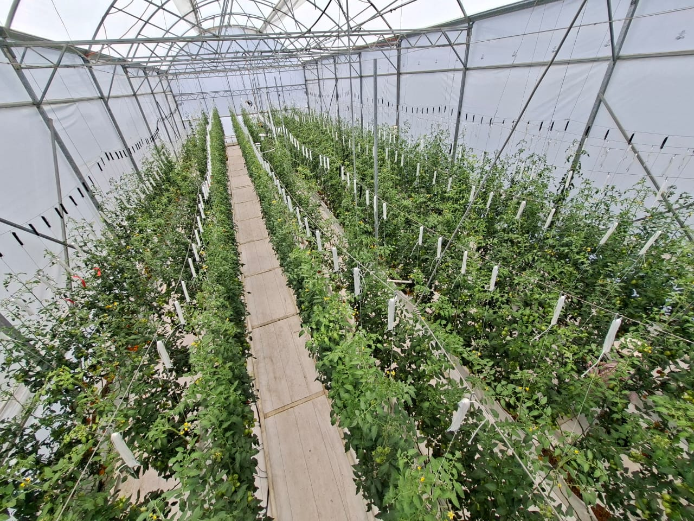
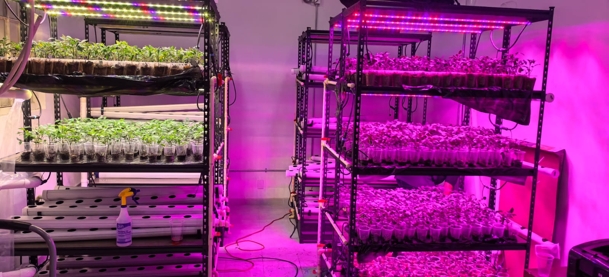
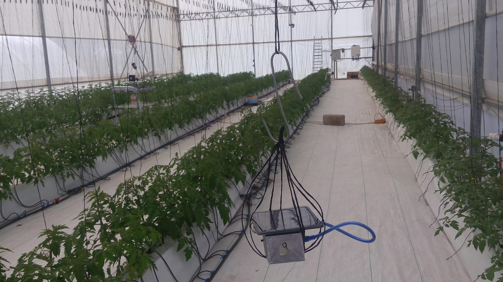
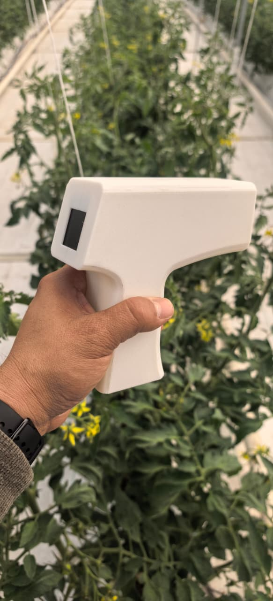

Infraestructura Experimental y Tecnológica
Espacios científicos diseñados para el monitoreo de precisión, control bioclimático, modelación predictiva y validación rigurosa de tecnologías sustentables en biosistemas.
Ambientes Controlados
Invernadero y PFAL
Instalaciones dedicadas a experimentación y diseño de prototipos y sistemas automatizados.
Instrumentación y Control
Adquisición de datos
Sensores, registradores de datos y controladores para la medición de variables ambientales, foliares, y de fertirriego.
Cómputo y Modelación
Simulación y modelos numéricos
Estaciones de trabajo para simulación avanzada de modelos dinamicos y basados en la dinámica de fluidos computacionales (CFD) y algoritmos de control.
Tecnologías renovables
Eficiencia y sostenibilidad
Sistemas de aprovechamiento solar térmico y fotovoltaico, almacenamiento de energía y optimización para la autosuficiencia energética en agricultura protegida.
Ambientes Controlados
Nuestras instalaciones cuentan con un invernadero tecnificado diseñado específicamente para la investigación científica, permitiendo controlar con precisión factores climáticos y nutricionales que impactan el desarrollo del cultivo.
Control climatico
Sistemas de ventilación cenital y lateral automatizada, sistemas de calefacción solar y por quemadores de aire caliente y sistema de nebulización para mantener condiciones óptimas en cualquier época del año.
Fertirriego Automatizado
Inyección dosificada de nutrientes, monitoreo constante de conductividad eléctrica (CE) y pH, con capacidad de recirculación de nutrientes.
Control de DPV
Monitoreo y ajuste continuo de la diferencia de presión de vapor (DPV) para prevenir estrés hídrico, optimizar la transpiración y favorecer la absorción fotosintética.
Automatización y Robótica Agrícola
Plataformas de prototipado rápido, actuadores industriales y sistemas robóticos experimentales para la manipulación y control autónomo en entornos protegidos.

Infraestructura Principal
Módulo Invernadero Experimental
Estructura monobahia con cubierta de polietileno y policarbonato, equipada con sensores distribuidos y actuadores electromecánicos.
Instrumentación y Sensores Especializados
La base de la modelación precisa reside en la calidad de los datos experimentales. Contamos con instrumental metrológico y de grado científico para la adquisición continua y sincrónica de parámetros ambientales, fisiológicos y de suelo.
Variables Fisiológicas
Respuesta de la planta
- ✓ Medición infrarroja foliar: Estimación sin contacto de la temperatura del cultivo para el calculo de DPV.
- ✓ Mediciones morfológicas: Registro de variaciones en numero de hojas, fruto y tallo.
- ✓ Porometría estomática: Medición directa de la resistencia o conductancia difusiva de las hojas para cuantificar la transpiración y el intercambio gaseoso.
Monitoreo climático
Ambiente controlado
- ✓ Radiación PAR cuántica: Medición de flujo de fotones fotosintéticos (PPFD en µmol·m⁻²·s⁻¹).
- ✓ Sondas termohigrométricas: Sensores capacitivos calibrados para temperatura seca, bulbo húmedo y HR.
- ✓ Sensores NDIR de CO₂: Medición espectrométrica infrarroja con tecnología CARBOCAP para el análisis de concentración y tasas de intercambio gaseoso en el microclima.
Sistema IoT
Conectividad y telemetría
- ✓ Adquisición Campbell Scientific: Red distribuida de 4 dataloggers interconectados mediante infraestructura Ethernet para el registro síncrono de variables microclimáticas.
- ✓ Telemetría y Servidor Local: Integración de comunicaciones alámbricas para la transferencia continua de flujos de datos hacia un nodo central de procesamiento.
- ✓ Almacenamiento y Visualización en Tiempo Real: Procesamiento de series temporales mediante base de datos InfluxDB y despliegue de paneles operativos en Grafana para la supervisión remota del sistema.
Cómputo Científico y Modelación Matemática
El laboratorio integra estaciones de trabajo de alto desempeño configuradas para resolver sistemas de ecuaciones diferenciales no lineales, simulaciones basadados en dinámica de fluidos computacionales (CFD) y algoritmos de optimización para control en tiempo real.
Estaciones de Trabajo y Servidores Locales
Arquitecturas multinúcleo con aceleración gráfica por GPU dedicadas a la estimación paramétrica, análisis de sensibilidad y procesamiento masivo de datos.
Estrategias de Control Avanzado
Implementación de estrategias de control avanzadas como Control Predictivo basado en Modelos (MPC), Control Optimo y Control Neurodifuso.
Almacenamiento y Visualización (InfluxDB y Grafana)
Gestión de series temporales mediante bases de datos InfluxDB y despliegue de paneles operativos en Grafana para el monitoreo en tiempo real.
Entornos y Herramientas
Stack de Modelación y Simulación
MATLAB & Simulink
Modelación matemática de biosistemas, diseño de leyes de control y sintonización de algoritmos de optimización.
Julia
DifferentialEquations.jl e InfiniteOpt.jl para modelación dinámica, estimación de parametros y optimización local y global.
Simulación Numérica CFD (Ansys)
Análisis de perfiles de velocidad del aire, distribución de temperatura y humedad, dentro del invernadero bajo diferentes regímenes de ventilación natural.
Gestión Térmica y Energética
Modelado y simulación de flujos de calor en sistemas de calefacción solar, almacenamiento hídrico y redes de distribución radiante.
Galería del Laboratorio
Un vistazo a nuestras instalaciones, áreas de prueba experimental y los espacios donde confluyen investigadores, estudiantes y desarrolladores tecnológicos.

Invernadero: Cultivo y Fertirriego
Líneas de cultivo tecnificadas con control de fertirriego automatizado, monitoreo continuo de sustrato y desarrollo foliar.

Invernadero: Clima y Ventilación
Sistemas de ventilación cenital automatizada, sensores de microclima e infraestructura de soporte experimental.

Plant Factory (PFAL)
Instalación de ambiente completamente cerrado con iluminación LED espectral sintonizable, control térmico e hidroponía vertical.

Prototipo Mecatrónico I
Plataforma de prueba para integración de sensores, actuadores electromecánicos y robótica aplicada en agricultura protegida.

Prototipo de Control II
Módulo de control de variables dinámicas, telemetría y sintonización de leyes de control óptimo en tiempo real.
Invernadero Monobahia
Vista exterior de la estructura monobahia orientada estratégicamente para optimización de radiación solar y ventilación natural.
¿Te interesa conocer nuestras instalaciones en persona?
Recibimos estancias de investigación, visitas institucionales y tesistas de diversas universidades para conocer nuestros protocolos experimentales.